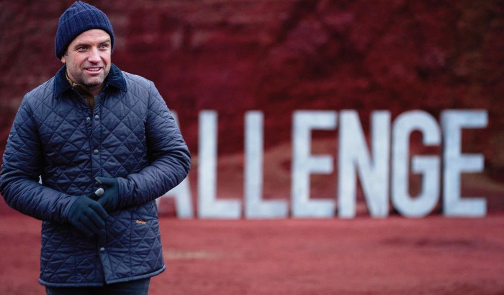

The Challenge Database
$ Vault $
After the airing of the 37th season, MTV and The Challenge will have given out over $14,000,000 to winners. Two contestants, Ashley Mitchell and Johnny Bananas, are the only ones to surpass $1 million in winnings over their time on the show. The show first awarded $1 million in prize money in season 30: Dirty 30, which aired in 2017.
fun fact.
In the finale of season 28: Rivals III, finalists who scored better than their partner were given the opportunity to keep all their winnings to themselves instead of splitting the prize. First place finisher, Johnny Bananas, decided to keep the $275,000 to himself, sending co-winner and his final challenge partner, Sarah Rice, home empty handed.
Filming
The Challenge has filmed in 28 countries and territories across the globe with some seasons being filmed in multiple countries. While many of the early seasons were filmed in the United States, the show has filmed internationally since season 9: Battle of the Sexes II. The show has also made efforts to diversify its cast. 17 of the 34 contestants in season 37: Spies, Lies and Alies hail from countries other than the U.S..
Fun Fact!
The first international contestant to win a team Challenge was Piggy Thomas (Australia) in season 3: Challenge 2000. The first international contestant with a solo win was Turabi "Turbo" Camkiran (Turkey) in season 33: War of the Worlds.
Couresty of@turabion Instagram
T.J. Lavin

Couresty of@tjlavinon Instagram
Something about TJ.